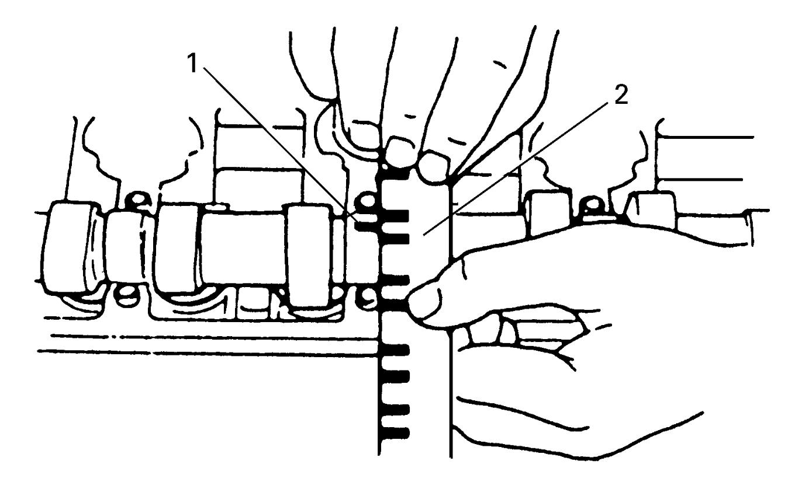

1D
| VVT Actuator, Camshaft, Tappet and Shim Inspection |
VVT Actuator
Fit VVT actuator to camshaft (2) and hold hexagonal section of camshaft using spanner or the like.
Check if VVT actuator (1) is not turned by hand.
If moved, replace VVT actuator.
 "Expand image")
Cam Wear
Using a micrometer, measure cam height “a”. If measured height is below its limit, replace camshaft.
Cam height “a” of camshaft
| Cam height | Standard | Limit |
|---|---|---|
| Intake cam | 45.22 – 45.38 mm (1.780 – 1.786 in.) | 44.80 mm (1.763 in.) |
| Exhaust cam | 44.72 – 44.88 mm (1.760 – 1.766 in.) | 44.28 mm (1.743 in.) |
 "Expand image")
Camshaft Runout
Set camshaft between two “V” blocks and measure its runout using a dial gauge.
If measured runout exceeds limit, replace camshaft.
Camshaft runout
Limit: 0.015 mm (0.006 in.)

 "Expand image")
Camshaft Journal Wear
Check camshaft journals and camshaft housings for pitting, scratches, wear or damage.
If any defect is found, replace camshaft or cylinder head with housing. Replace cylinder head and housings as a set.

 "Expand image")
Check clearance using gauging plastic according to the following procedure.
1)Clean housings and camshaft journals.
2)Remove all tappets with shims.
3)Install camshafts to cylinder head.
4)Place a piece of gauging plastic to full width of journal of camshaft (parallel to camshaft).
5)Install camshaft housing. 
6)Remove housing, and using scale (2) on gauging plastic envelope, measure gauging plastic (1) width at the widest point.
 If measured camshaft journal clearance exceeds limit, measure camshaft journal diameter and camshaft journal housing bore diameter. Replace camshaft or cylinder head assembly whichever the difference from specification is greater.
If measured camshaft journal clearance exceeds limit, measure camshaft journal diameter and camshaft journal housing bore diameter. Replace camshaft or cylinder head assembly whichever the difference from specification is greater.

Camshaft journal clearance
| Standard | Limit | |
|---|---|---|
| Intake side No.1 housing | 0.020 – 0.072 mm (0.0008 – 0.0028 in.) |
0.10 mm (0.0039 in.) |
| Exhaust side No.1 housing | 0.045 – 0.087 mm (0.0018 – 0.0034 in.) |
0.12 mm (0.0047 in.) |
| Others | 0.025 – 0.067 mm (0.0010 – 0.0026 in.) |
0.10 mm (0.0039 in.) |

 "Expand image")
Camshaft journal diameter [A]
| Item | Standard |
|---|---|
| Intake side No.1 housing | 26.940 – 26.955 mm (1.0607 – 1.0612 in.) |
| Exhaust side No.1 housing | 26.934 – 26.955 mm (1.0604 – 1.0612 in.) |
| Others | 22.954 – 22.975 mm (0.9037 – 0.9045 in.) |
Camshaft journal housing bore diameter [B]
| Item | Standard |
|---|---|
| Intake side No.1 housing | 30.000 – 30.015 mm (1.1812 – 1.1816 in.) |
| Exhaust side No.1 housing | 27.000 – 27.021 mm (1.0630 – 1.0638 in.) |
| Others | 23.000 – 23.021 mm (0.9056 – 0.9063 in.) |
Camshaft bearing thickness
1.5120 – 1.5180 mm (0.0596 – 0.0597 in.)
 "Expand image")
Wear of Tappet and Shim
Check tappet and shim for pitting, scratches or damage.
If any defect is found, replace.

 "Expand image")
Measure cylinder head bore and tappet outside diameter to determine cylinder head-to-tappet clearance. If clearance exceeds limit, replace tappet or cylinder head.
Cylinder head to tappet clearance
Standard: 0.025 – 0.066 mm (0.0010 – 0.025 in.)
Limit: 0.15 mm (0.0059 in.)
Tappet outside diameter [A]
Standard: 30.959 – 30.975 mm (1.2189 – 1.2194 in.)
Cylinder head tappet bore [B]
Standard: 31.000 – 31.025 mm (1.2205 – 1.2214 in.)
 "Expand image")